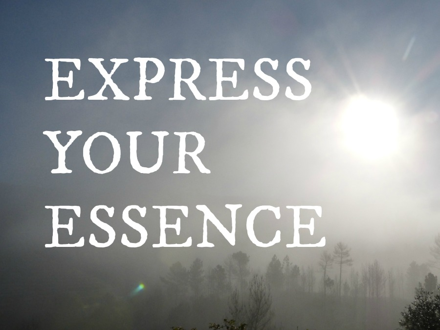

Writing your website can feel like being lost in the woods.
You know where you want to end up: with a site that's clear, professional,
you. That connects with your right clients so they get a sense of who you
really are, and how you can help them. For them to understand what you do, and why, so that the choice to work with you is easy.
And there's plenty to write about: you love what you do, love explaining the method behind your work. But when you read the words back, something just doesn't chime. The sparkle isn't there. If you're honest, the words feel... flat. Amateur. Hollow.
So you start again, one more time, from the top - and you're back in the woods again.
You don't just want to list your services and your experience. You're more than that. You want to resonate with your people, to tell the story of you and your business (without oversharing or boring your readers). To be human, professional, and relatable. To build a brand that's authentic and sustainable and true to your values.
Your work is transformative, but it's not magic. You have skills that you've spent years honing, and you want to sum them up without sounding flaky, cheesy, or like everyone else on the web.
Writing your website is taking so much time! Time that could be spent working with clients, connecting, creating - doing the things you love to do.
Finding the path
I've spoken to loads of entrepreneurs who find it hard to put their work into words, so I get it. It's not that you don't enjoy telling your dream clients how you can serve them.
But you get tired of repeating yourself and you hate the fact that the words you use are starting to sound tired, too. You wish your website could act as a virtual host, welcoming people in and showing them around. You, but you on your best day: bright and open-hearted and delighted to walk your visitors through your process, share your story, and invite them to become your clients.
Often, the thought of having someone else write for you doesn't seem realistic. What if they can't get your style? What if you sound even less authentic?
You want to be involved - you enjoy the process. It would just be great to have someone on your side who'd take the time to get to know you and your craft, who'd get excited about finding the right words.
Take my hand
It's time to find the truth in what you're doing, and bring it out into the world.
Imagine having a writing ally with the right words at their fingertips. Someone who believes in what you're doing and is excited to discover what's unique about you and your work.
Someone you could throw your jumble of ideas at and would be able to pick out the silver thread that connects them, and hold it up for you to look at.
Someone who'd give you honest, objective feedback.
Someone with standards as high as yours, to help reflect back the impact you're making, so that your right clients will find you and know they're home.
Express Your Essence
Express Your Essence is a package of fully written and edited web pages - typically your home page, about page and up to three sales/services pages - for your site. We can also include key blog posts if you'd like – we'll come up with a bespoke combination that works for your business.
I'm a trained proofreader, have a degree in English from Oxford, and lots of experience helping self-employed, creative people just like you express themselves online. My standards are high and I'm committed to making sure your website is authentically, honestly
you – because that's what makes your business stand out.
My process involves two Skype calls and two rounds of revisions, so that I can get to know you and your work thoroughly, and transform it into words that make you smile.
We'll dig deep into who you are, what you do and why, to tell your unique story in a way that's irresistible to your ideal clients.
3 webpages:
£300.
5 webpages:
£450.
All work includes two rounds of revisions, and your own brand stylesheet to refer back to when writing your own copy.
Your first step? Click this button and send me an email.
Let's start
(Not into button clicking? My address is madeleine
at madeleineforbes.co.uk)
Tell me who you are and what your work is. Let's get to know each other.
I'll write back, asking you for some logistics. We'll agree a schedule, I'll send you over the prep materials you need to start sharing who you are, and we'll begin making some magic.